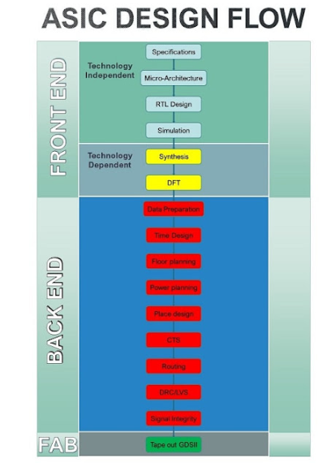

Read: Understand the objective, references, and expected deliverables. Review the BACKGROUND section, complete any assigned pre-lab exercise, and read the referenced manual pages
Set up: source the correct environment and confirm paths and input files. Work only in the designated run directory. Do not rename, delete, or modify shared technology files, libraries, or common setup files.
Run: execute one stage at a time using a saved script whenever possible.
Verify: inspect logs for errors or warnings after performing each step of the RTL to GDS flow.
Checkpoint: preserve important databases and outputs before major transitions.
Reflect: relate the observed result to the design concept and answer the questions.
Do not continue blindly after an error. A successful tool command does not guarantee a correct design. Confirm the expected output and verification status at every handoff.
Recommended Practice
Keep Tcl scripts, constraints, logs, reports, generated netlists, and important screenshots in clearly named folders.
Record timing values with their sign, unit, analysis type, and operating corner or view.
Use matching versions of the netlist, constraints, parasitics, and SDF file; do not combine outputs from unrelated runs.
Document any warning, violation, workaround, or ECO and explain its effect on the design.
Use meaningful file names and comments so another student can understand and reproduce the flow.
Ask the instructor before changing technology data, library settings, supplied RTL, or the defined experiment scope.
FOUNDATION
Background
RTL-to-GDSII Flow Overview
An RTL-to-GDSII flow progressively transforms a behavioral hardware description into a physically manufacturable layout. Each stage adds information, checks correctness, and produces files required by the next stage. The flow is iterative: a timing or physical violation may require returning to an earlier stage.

Major front-end, back-end, and fabrication stages in an ASIC design flow.
This flow chart shows many of the individual stages digital designers follow in industry. However, it does not show the cyclic nature between individual stages. For example, a bug discovered in Simulation provokes RTL Design modifications. In general, problems discovered in the back end sometimes require changes in the front end. Therefore, it is imperative that you are well-versed in the mechanics of simulating your designs before designing anything.
The principal stages to pay attention to are RTL Design, Synthesis, Place Design, and Routing. The last two stages are often combined and termed Place and Route.
CAD Tools
Going through the design flow is quite labor-intensive and intricate. In general, computer-aided design (CAD) software tools are programs used to reduce the burden of manually performing each stage of a design flow. Electronic design automation (EDA), or electronic computer-aided design (ECAD), tools are specifically created to aid integrated-circuit design flows.
The three major CAD companies for ASIC design are Cadence, Synopsys, and Siemens. Each supplies tools for all stages of the Very Large-Scale Integration (VLSI) flow. VLSI refers to complex integrated circuits containing thousands or more transistors.
Design stage
Synopsys
Cadence
Siemens
Simulation
VCS
Xcelium Logic Simulator
—
Synthesis
Fusion Compiler (Design Compiler)
Genus
—
Place and Route
Fusion Compiler (IC Compiler II)
Innovus
—
Physical Layout
Custom Compiler
Virtuoso Layout Suite
L-Edit
DRC and LVS
IC Validator
Virtuoso Layout Suite
Calibre
Verification and Signoff
NanoTime
Virtuoso Layout Suite
Calibre
Power
PrimePower
Voltus
—
It is common to use different tools for different stages of the design flow. This is possible because tools typically write common interchange file formats that other vendors' tools can consume, or provide utilities for converting files into supported formats. For example, a design may use Synopsys VCS for simulation, Cadence Genus and Innovus for synthesis and place-and-route, respectively, and Siemens Calibre for DRC and LVS. You will gain experience with some of these tools in subsequent labs.
SkyWater 130 and Process Design Kits
SkyWater 130, or SKY130, is an open-source process design kit (PDK) for a 130 nm technology node. The details of a PDK will become clearer through later laboratories. Major foundries such as Intel, GlobalFoundries, and TSMC provide PDKs for their fabrication processes.
A PDK is a set of files used by semiconductor design tools to model a fabrication process. PDKs are commonly specific to a foundry and may be proprietary, although some PDKs are open source and publicly available. (Adapted from UC San Diego PDK guidance.)
Simulation
Simulation is a fundamental step in ASIC design and digital design in general. Different forms of simulation can occur at several stages of the design cycle; the two principal forms considered here are behavioral simulation, also called RTL simulation, and gate-level simulation.
Testbenches
A testbench is an HDL module used only for simulation. It instantiates the design under test (DUT), drives its inputs, and verifies its outputs.
Waveforms
A waveform file records selected signals during simulation so they can be viewed as traces after the run. Desired signals must be marked before simulation; a signal that was not recorded cannot be added to an already completed waveform. Waveforms are the primary means by which digital designers debug RTL. Use the following order:
Look for obvious bugs in the RTL.
If the bug is not obvious, inspect the waveform.
RTL Simulation
RTL simulation is one of the first steps used to check the functionality or behavior of an RTL design. Fixing bugs at the RTL stage makes subsequent debugging easier, and the required computing resources and runtime are much lower than for gate-level simulation.
Gate-Level Simulation
Gate-level simulation is performed after a design has been synthesized. Synthesis transforms a behavioral Verilog representation into digital logic gates, or cells, from a given library to form a netlist. Post-synthesis simulation therefore evaluates the design at the gate level.
By default, logic gates behave ideally: their outputs appear valid instantly when a new input is presented. In real silicon, gate delay varies with operating conditions such as voltage, process variation, and temperature. CAD tools calculate these delays and annotate them onto gates using a Standard Delay Format (SDF) file.
Gate-level simulations with timing annotation model signal propagation. A gate output does not change instantly when its input changes; the signal must propagate through the gate.
Standard Delay Format (SDF)
SDF is an IEEE standard representation of timing data that can be used at different stages of the electronic-design process.
Note: Detailed knowledge of every SDF feature is unnecessary for this lab. Students interested in additional detail may consult this four-part SDF tutorial.
Example SDF cell definition:
(CELL
(CELLTYPE "CLKINVX2")
(INSTANCE adde.g768)
(DELAY
(ABSOLUTE
(PORT A (::0.1))
(IOPATH A Y (::157) (::128))
)
)
)
The example is a single cell definition from src/post-syn/fir.mapped.sdf. Its main fields are:
CELLTYPE — names the type of cell in the PDK.
INSTANCE — identifies the specific instance of the cell in the current design.
DELAY — provides timing information for the cell.
ABSOLUTE — indicates that the timing values are absolute.
PORT A — provides timing information for input A.
IOPATH — provides propagation timing from input A to output Y; the example cell is an inverter.
The delay format is minimum:typical:maximum. Minimum and maximum values represent different operating regions. The example specifies maximum delays of either 157 ps or 128 ps, depending on whether the data transitions from low to high or from high to low. The SDF timescale declaration determines that these values are in picoseconds.
What Is Synthesis?
Synthesis transforms RTL, typically written in Verilog or VHDL, into a gate-level netlist. A synthesized gate-level Verilog netlist contains cells from the target technology. For each cell, the PDK supplies information such as a transistor-level schematic with transistor sizes, a physical layout for fabrication, and timing libraries containing performance specifications.
Cadence Genus is used for synthesis in this course. The process begins with compilation and elaboration of RTL. According to IEEE Std 1800-2017, compilation reads the RTL and analyzes it for syntax and semantic errors. Elaboration expands instantiations and hierarchies, resolves parameter values, and establishes netlist connectivity. In Genus, elaboration produces a generic netlist composed of generic gates such as CDN_flop and CDN_mux2. These generic gates do not yet correspond physically to cells in the target standard-cell library.
Introduction to Static Timing Analysis
Static Timing Analysis (STA) validates timing performance by analyzing timing arcs for violations. Broadly, it identifies timing arcs, calculates propagation delays, and checks setup and hold requirements. Basic delay concepts can be understood by inspecting timing-library fragments.
Two important classes of delay are cell delay and net delay. In a Liberty timing model, the delay through a cell can be represented by a two-dimensional lookup table indexed by input-net transition and cell output capacitance. The timing sense describes the relationship between input and output transitions. In the following ASAP7-style example, the arc is positive_unate, so a rising input is associated with a rising or non-changing output.
Wire delays can be estimated with a wire_load macro model selected according to the enclosure area of a net. The model scales resistance and capacitance according to fanout so an RC delay can be estimated. Because wire-load modeling is statistically driven, it may be pessimistic; organizations sometimes replace foundry models with models derived from their own designs and measured activity.
To implement and verify a counter design from RTL through GDSII using the Cadence digital design flow, without scan insertion or ATPG.
2. Learning Outcomes
Verify the functional behavior of a counter RTL design using simulation.
Synthesize RTL into a technology-mapped gate-level netlist without DFT.
Confirm equivalence between the RTL and synthesized netlist.
Complete floorplanning, power planning, placement, clock-tree synthesis, routing, extraction, and physical verification.
Analyze setup and hold timing and apply a timing ECO only when required.
Generate the final GDSII stream and validate the implemented design using gate-level simulation with SDF annotation.
3. Reference and Scope
Use Cadence RTL-to-GDSII Flow, Course Version 7.0, Lab Manual, Revision 1.0 (July 2025) as the detailed procedural reference. Follow the cited lab sections below; do not reproduce their full procedures in the laboratory report.
Included
Excluded or adapted
Labs 3-1, 5-1, 7-1, 7-2, 8-1, 9-1, and 10-1
The complete Module 4, Lab 5-2, and the complete Module 6 are excluded.
Non-DFT synthesized netlist
Do not perform scan insertion, scan-chain connection, ATPG, or pattern generation.
Timing analysis of valid counter paths
Ignore scan-specific instructions involving scanDEF, SE, scan_in, or scan_out.
4. LINUX OS and Tcl Programming
Before starting the Cadence flow, watch the introductory Tcl videos and complete the short scripting exercise below.
Complete the following stages in order. For detailed menus, commands, options, screenshots, and troubleshooting guidance, follow the referenced pages in the supplied lab manual.
#
Stage
Manual reference
Required activity
Evidence
1
Environment setup
Module 1, p. 6; Lab 3-1, pp. 9–10
Configure and source cshrc. Confirm that each required tool launches and that the counter database directories are intact.
Environment log or setup screenshot
2
RTL simulation
Lab 3-1, pp. 9–15
Run Xcelium in graphical and batch modes. Verify reset and count progression in the waveform.
RTL waveform and simulation log
3
Synthesis without DFT
Lab 5-1, pp. 23–31
Run the basic Genus synthesis flow only. Generate the mapped netlist, final SDC, SDF, area, power, timing, and QoR reports.
Compare the RTL golden design with the non-DFT synthesized revised design. Generate the Verilog cell model required for GLS if it is not already supplied.
Equivalent result and library .v file
5
Physical implementation
Lab 8-1, pp. 60–95
Import the Lab 5-1 netlist and complete floorplanning, pin assignment, power planning, placement, CTS, routing, extraction, timing checks, DRC/connectivity checks, power/rail analysis as available, filler placement, and stream-out. Skip scanDEF and scan-reordering actions.
Placed/routed views, SPEF, reports, and counter GDSII
6
Timing analysis and closure
Lab 9-1, pp. 97–116
Analyze setup and hold timing in Innovus/Tempus. Debug only paths present in the non-DFT design. Apply and record an ECO if a real violation exists; otherwise document that no ECO was required.
Constraint and setup/hold timing reports and ECO record
7
Gate-level simulation
Lab 10-1, pp. 118–124
Run delay-aware GLS using the non-DFT gate or post-route netlist, its matching SDF, the modified testbench, and the Verilog cell model. Do not force scan signals.
SDF annotation log and GLS waveform
6. Important Adaptations for the Non-DFT Flow
Use the mapped netlist produced by Lab 5-1. Do not substitute the DFT netlist associated with Lab 5-2.
During Lab 8-1, omit loading counter.scandef and omit scan-chain deletion, loading, or reordering. Continue with normal placement and optimization of the non-DFT netlist.
During Lab 9-1, do not attempt the manual's SE/scan-path example. Select an actual violating path in the non-DFT design. If no path violates timing, retain the reports as evidence of closure.
During Lab 10-1, remove or ignore instructions that force SE, scan_in, and scan_out. Apply only the counter's normal functional stimulus.
The SDF used for GLS must correspond to the same netlist being simulated. Prefer a post-route netlist and post-route SDF when both are available; otherwise use the matching synthesis pair generated in Lab 5-1.
7. Results to Record
Record signed values exactly as reported, including the analysis view/corner and units. WNS is the minimum (worst) path slack; TNS is the sum of all negative path slacks. Do not remove minus signs or mix values from different corners.
Parameter
Where to obtain it / what to record
Unit
RTL simulation
Xcelium log and waveform: Pass/Fail; verify reset and correct count progression.
Status
Synthesis cell area
Genus reports/report_area.rpt: record total mapped cell area.
Library area unit
Synthesis critical-path delay
Genus reports/report_timing.rpt: record data-path delay of the worst setup path.
ns
Synthesis WNS, TNS, violators
Genus report_timing.rpt or report_qor.rpt: record WNS, TNS, and number of violating endpoints.
ns; count
Synthesis power components
Genus reports/report_power.rpt: record internal, switching, and leakage power separately.
Use report unit
Logical equivalence
Conformal compare result: Equivalent/Non-equivalent and number of failing compare points.
Status; count
Post-placement timing
Innovus log after place_opt_design: record WNS and TNS.
ns
Post-CTS timing
Innovus log after clock_opt_design: record whether violations exist and their count.
Status; count
Post-route setup timing
time_design -post_route: record WNS, TNS, and number of violating endpoints.
ns; count
Post-route hold timing
time_design -post_route -hold: record WNS, TNS, and number of violating endpoints.
ns; count
Physical verification
Innovus Check DRC and Check Connectivity: record DRC and connectivity violation counts separately.
Counts
Physical power components
Innovus power-analysis log: record internal, switching, leakage, and reported total power.
Use report unit
Rail-analysis result
Rail report/plot: record minimum VDD or worst IR drop when numeric data is available; otherwise record whether red regions appear.
V or mV; Yes/No
GDSII output
Stream-out result: record successful generation and the counter GDSII file size.
Status; bytes
Gate-level simulation
GLS log and waveform: Pass/Fail; record SDF annotation warning/error count.
Status; count
Acceptance check: The final design passes only when equivalence and GLS pass, setup and hold WNS are non-negative, and DRC/connectivity violation counts are zero. Explain any exception allowed by the instructor.
8. Post-Lab Questions
#
Question
1
Why is equivalence checking required even after RTL simulation passes?
2
Which files connect synthesis to physical implementation, and what information does each provide?
3
How do clock-tree synthesis and parasitic extraction change the timing model of the counter?
4
What is the difference between a logical-equivalence failure, a timing violation, a DRC violation, and a connectivity violation?
5
Why must the SDF file match the exact gate-level or post-route netlist used in GLS?
6
Which verification activities are intentionally absent because Module 4, Lab 5-2, and Module 6 were excluded?
LAB 02
Lab 2: Title
Objectives
Add the first learning objective for Lab 2.
Add the second learning objective for Lab 2.
Add any additional objectives as required.
Tasks
Add Task 1 for Lab 2.
Add Task 2 for Lab 2.
Add Task 3 or additional implementation/reporting work.
LAB 03
Lab 3: Title
Objectives
Add the first learning objective for Lab 3.
Add the second learning objective for Lab 3.
Add any additional objectives as required.
Tasks
Add Task 1 for Lab 3.
Add Task 2 for Lab 3.
Add Task 3 or additional implementation/reporting work.